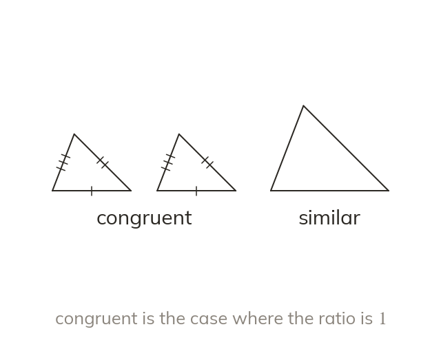

Congruent and similar
Congruent shapes are identical: equal lengths and equal angles. Similar shapes have equal angles, with sides in the same ratio. A ratio of means congruent.
Congruent shapes are identical in both size and shape - every corresponding length AND angle is equal. Similar shapes share equal corresponding angles but not necessarily equal size - corresponding sides are in the same ratio, which could be a ratio of (congruent) or any other value.